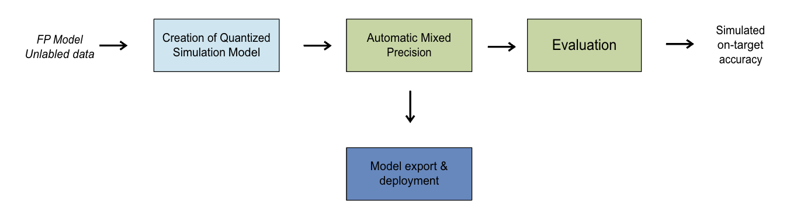
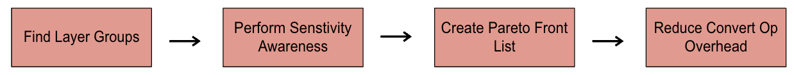
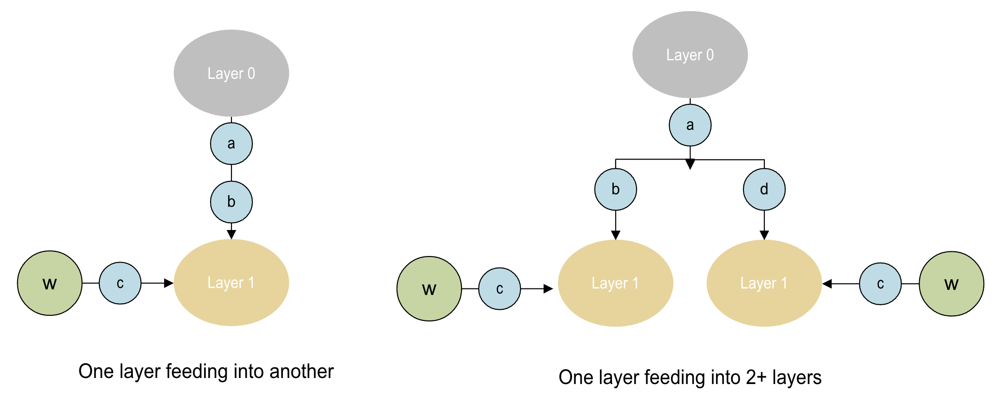
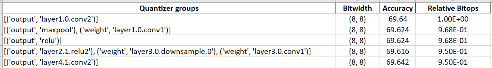
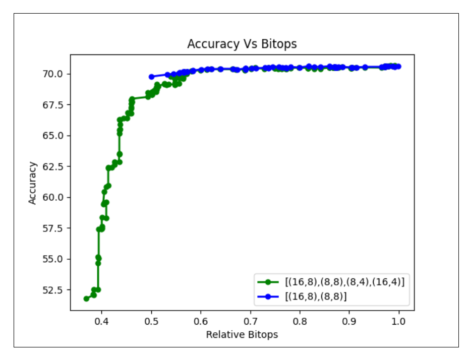

Automatic mixed precision¶
Automatic mixed precision (AMP) helps choose per-layer integer bit widths to retain model accuracy on fixed-point runtimes like Qualcomm® AI Engine Direct.
For example, consider a model that is not meeting an accuracy target when run in INT8. AMP finds a minimal set of layers that need to run on higher precision, INT16 for example, to achieve the target accuracy.
Choosing a higher precision for some layers involves a trade-off between performance (inferences per second) and better accuracy. The AMP feature generates a Pareto curve you can use to help decide the right operating point for this tradeoff.
Context¶
To perform AMP, you need a PyTorch, TensorFlow, or ONNX model. You use the model to create a
Quantization Simulation (QuantSim) model QuantizationSimModel. This QuantSim model, along with an
allowable accuracy drop, is passed to the API.
The API function changes the QuantSim model in-place with different bit-width quantizers. You can export or evaluate this QuantSim model to calculate a quantization accuracy.


Mixed Precision Algorithm¶
The algorithm involves four phases as shown in the following image.


Phase 0: Find quantizer groups¶
Quantizer group is a set of quantizers whose configurations are interdependent on one another in a practical setup. For example, the input and weight quantizer of a Convolution layer will be grouped as a quantizer group because only certain combinations such as W8A8, W8A16, W16A16, etc. make sense in practice. Grouping quantizers helps reduce the search space over which the mixed precision algorithm operates. It also ensures that the search occurs only over the valid bit-width settings for parameters and activations.


Phase 1: Perform sensitivity analysis¶
The algorithm performs a per-quantizer group sensitivity analysis. This identifies how sensitive the model is to lower quantization bit width for particular quantizer groups. The sensitivity analysis creates and caches an accuracy list that is used in following phases by the algorithm.
Following is an an accuracy list generated using sensitivity analysis:

Phase 2: Create a Pareto-front list¶
A Pareto curve or Pareto front describes the tradeoff between accuracy and bit-ops targets. The AMP algorithm generates a Pareto curve showing, for each quantizer group changed:
Bitwidth: The bit width to which the quantizer group was changed
Accuracy: The accuracy of the model
Relative bit-ops: The bit-ops relative to starting
An example of a Pareto list:


Bit-ops are computed as:
\(Bitops = Mac(op) * Bitwidth(parameter) * Bitwidth(Activation)\)
The Pareto list can be used for plotting a Pareto curve. A plot of the Pareto curve is generated using Bokeh and saved in the results directory.


You can pass two different evaluation callbacks for phase 1 and phase 2.
Since phase 1 measures sensitivity of each quantizer group, it can use a smaller representative dataset for evaluation, or even use an indirect measure such as SQNR that correlates with the direct evaluation metric but can be computed faster.
We recommend that you use the complete dataset for evaluation in phase 2.
Phase 3: Reduce Convert overhead¶
The Convert operation is a Qualcomm® AI Engine Direct runtime operation used to convert a quantized tensor from one precision to another. It is typically inserted between two consecutive operations that operate at different bit-widths. Because Convert operation incurs a significant runtime penalty, minimizing its usage is important for performance optimization.
Phase 3 aims to improve the overall runtime (latency) by reducing the number of Convert operations in the model. This algorithm achieves this by strategically promoting operations from lower to higher precision, thereby minimizing the need for Convert operations between layers operating at different bit-widths. Since the operations are always moved from lower to higher precision, this process preserves model accuracy. The Phase 3 algorithm produces mixed-precision solutions for a range of alpha values (0.0, 0.2, 0.4, 0.6, 0.8, 1.0), where alpha represents the fraction of total Convert operations retained in the mixed-precision profile.
Use Cases¶
- 1: Choosing a very high accuracy drop (equivalent to setting allowed_accuracy_drop to None)
AIMET enables a user to save intermediate states for computation of the Pareto list. Computing a Pareto list corresponding to an accuracy drop of None generates the complete profile of model accuracy vs. bit-ops. You can thus visualize the Pareto curve plot and choose an optimal point for accuracy. The algorithm can be re-run with the new accuracy drop to get a sim model with the required accuracy.
- 2: Choosing a lower accuracy drop and then continuing to compute a Pareto list
Use this option if more accuracy drop is acceptable. Passing clean_start=False causes the Pareto list to start computation from the point where it left off.
Note
In both use cases, choose_mixed_precision will exit early without exploring Pareto curve if the desired accuracy is either already achieved or deemed unattainable. For example, given W8A8 and W16A16 as candidates, mixed precision algorithm will exit early if one of the following is true:
Setting all layers to W8A8 yields higher accuracy than the desired accuracy
Setting all layers to W16A16 yields lower accuracy than the desired accuracy
Workflow¶
Procedure¶
Step 1¶
Setting up the model.
Import packages
import torch
import torchvision
from torch.utils.data import DataLoader
from tqdm import tqdm
from aimet_torch.batch_norm_fold import fold_all_batch_norms
from aimet_common.defs import QuantizationDataType, CallbackFunc
from aimet_torch.mixed_precision import choose_mixed_precision
from aimet_torch.quantsim import QuantizationSimModel
from aimet_torch.amp.mixed_precision_algo import GreedyMixedPrecisionAlgo
Load the model, define forward_pass and evaluation callbacks
# General setup that can be changed as needed
device = "cuda:0" if torch.cuda.is_available() else "cpu"
model = torchvision.models.mobilenet_v2(pretrained=True).eval().to(device)
batch_size = 64
PATH_TO_IMAGENET = ...
data = torchvision.datasets.ImageNet(PATH_TO_IMAGENET, split="train")
data_loader = DataLoader(data, batch_size=batch_size)
dummy_input = torch.randn(1, 3, 224, 224).to(device)
fold_all_batch_norms(model, dummy_input.shape)
# Callback function to pass calibration data through the model
def forward_pass(model: torch.nn.Module, batches):
with torch.no_grad():
for batch, (images, _) in enumerate(data_loader):
images = images.to(device)
model(images)
if batch >= batches:
break
# Basic ImageNet evaluation function
def evaluate(model, data_loader):
model.eval()
correct = 0
with torch.no_grad():
for data, labels in tqdm(data_loader):
data, labels = data.to(device), labels.to(device)
logits = model(data)
correct += (logits.argmax(1) == labels).type(torch.float).sum().item()
accuracy = correct / len(data_loader.dataset)
return accuracy
Import packages
import math
import os
import numpy as np
import onnx
import onnxsim
import torch
from datasets import load_dataset
from torchvision import transforms
from torchvision.models import MobileNet_V2_Weights, mobilenet_v2
from tqdm import tqdm
import aimet_onnx
from aimet_onnx.defs import DataLoader
from aimet_onnx.quantsim import QuantizationSimModel
from aimet_common.defs import QuantizationDataType, CallbackFunc
from aimet_onnx.mixed_precision import choose_mixed_precision
Instantiate a PyTorch model, convert to an ONNX graph, define forward_pass and evaluation callbacks
pt_model = mobilenet_v2(weights=MobileNet_V2_Weights.DEFAULT)
input_shape = (1, 3, 224, 224)
dummy_input = torch.randn(input_shape)
# Modify file_path as you wish, we are using temporary directory for now
file_path = os.path.join('/tmp', f'mobilenet_v2.onnx')
torch.onnx.export(
pt_model,
(dummy_input,),
file_path,
input_names=['input'],
output_names=['output'],
dynamic_axes={
'input': {0: 'batch_size'},
'output': {0: 'batch_size'},
},
dynamo=False,
)
# Load exported ONNX model
model = onnx.load_model(file_path)
# End of loading the model
# Prepare model with onnx-simplifier
try:
model, _ = onnxsim.simplify(model)
except:
print('ONNX Simplifier failed. Proceeding with unsimplified model')
# End of prepare model
# Set up dataloader
dataset = load_dataset(
'ILSVRC/imagenet-1k',
split='validation',
).shuffle()
class CustomDataLoader(DataLoader):
def __init__(
self,
data: np.ndarray,
batch_size: int,
iterations: int,
unlabeled: bool = True,
):
super().__init__(data, batch_size, iterations)
self._current_iteration = 0
self._unlabeled = unlabeled
def __iter__(self):
self._current_iteration = 0
return self
def __next__(self):
if self._current_iteration < self.iterations:
start = self._current_iteration * self.batch_size
end = start + self.batch_size
self._current_iteration += 1
batch_data = self._data[start:end]
if self._unlabeled:
return np.stack(batch_data['image'])
else:
return np.stack(batch_data['image']), np.stack(batch_data['label'])
else:
raise StopIteration
preprocess = transforms.Compose(
[
transforms.Resize(256),
transforms.CenterCrop(224),
transforms.ToTensor(),
transforms.Normalize(mean=[0.485, 0.456, 0.406], std=[0.229, 0.224, 0.225]),
]
)
def transforms(examples):
examples['image'] = [
preprocess(image.convert('RGB')) for image in examples['image']
]
return examples
dataset.set_transform(transforms)
BATCH_SIZE = 32
NUM_CALIBRATION_SAMPLES = 1024
NUM_EVAL_SAMPLES = 50000
unlabeled_data_loader = CustomDataLoader(
dataset, BATCH_SIZE, math.ceil(NUM_CALIBRATION_SAMPLES / BATCH_SIZE)
)
eval_data_loader = CustomDataLoader(
dataset, BATCH_SIZE, math.ceil(NUM_EVAL_SAMPLES / BATCH_SIZE), unlabeled=False
)
# End of setting up dataloader
def forward_pass(session, _):
input_name = session.get_inputs()[0].name
for inputs in tqdm(unlabeled_data_loader):
session.run(None, {input_name: inputs})
def evaluate(session, _):
correct_predictions = 0
total_samples = 0
for inputs, labels in tqdm(eval_data_loader):
input_name = sim.session.get_inputs()[0].name
pred_probs, *_ = sim.session.run(None, {input_name: inputs})
pred_labels = np.argmax(pred_probs, axis=1)
correct_predictions += np.sum(pred_labels == labels)
total_samples += labels.shape[0]
accuracy = correct_predictions / total_samples
return accuracy
Step 2¶
Quantizing the model.
Quantization with mixed precision
default_bitwidth = 16
# ((activation bitwidth, activation data type), (param bitwidth, param data type))
candidates = [((16, QuantizationDataType.int), (16, QuantizationDataType.int)),
((16, QuantizationDataType.int), (8, QuantizationDataType.int)),
((8, QuantizationDataType.int), (16, QuantizationDataType.int))]
# Allowed accuracy drop in absolute value
allowed_accuracy_drop = 0.5 # Implies 50% drop
eval_callback_for_phase_1 = CallbackFunc(evaluate, func_callback_args=data_loader)
eval_callback_for_phase_2 = CallbackFunc(evaluate, func_callback_args=data_loader)
calibration_batches = 10
forward_pass_call_back = CallbackFunc(forward_pass, func_callback_args=calibration_batches)
# Create quant sim
sim = QuantizationSimModel(model,
default_param_bw=default_bitwidth,
default_output_bw=default_bitwidth,
dummy_input=dummy_input)
sim.compute_encodings(forward_pass, forward_pass_callback_args=calibration_batches)
# Enable phase-3 (optional)
GreedyMixedPrecisionAlgo.ENABLE_CONVERT_OP_REDUCTION = True
# Call the mixed precision algo with clean start = True i.e. new accuracy list and pareto list will be generated
# If set to False then pareto front list and accuracy list will be loaded from the provided directory path
# A allowed_accuracy_drop can be specified to export the final model with reference to the pareto list
pareto_front_list = choose_mixed_precision(sim, dummy_input, candidates, eval_callback_for_phase_1,
eval_callback_for_phase_2, allowed_accuracy_drop, results_dir='./data',
clean_start=True, forward_pass_callback=forward_pass_call_back)
print(pareto_front_list)
# Set clean_start to False to start from an existing cache
# Set allowed_accuracy_drop to 0.9 to export the 90% drop point in pareto list
allowed_accuracy_drop = 0.9
pareto_front_list = choose_mixed_precision(sim, dummy_input, candidates, eval_callback_for_phase_1,
eval_callback_for_phase_2, allowed_accuracy_drop, results_dir='./data',
clean_start=False, forward_pass_callback=forward_pass_call_back)
print(pareto_front_list)
sim.export("./data", str(allowed_accuracy_drop), dummy_input)
Quantization with mixed precision
# Define parameters to pass to mixed precision algo
# ((activation bitwidth, activation data type), (param bitwidth, param data type))
candidates = [((16, QuantizationDataType.int), (16, QuantizationDataType.int)),
((16, QuantizationDataType.int), (8, QuantizationDataType.int)),
((8, QuantizationDataType.int), (16, QuantizationDataType.int))]
# Allowed accuracy drop in absolute value
allowed_accuracy_drop = 0.5 # Implies 50% drop
eval_callback_for_phase_1 = CallbackFunc(evaluate, func_callback_args=None)
eval_callback_for_phase_2 = CallbackFunc(evaluate, func_callback_args=None)
forward_pass_callback = CallbackFunc(forward_pass, func_callback_args=None)
# Create quant sim
sim = QuantizationSimModel(model, param_type=aimet_onnx.int16, activation_type=aimet_onnx.int16)
sim.compute_encodings(forward_pass, forward_pass_callback_args=None)
# Call the mixed precision algo with clean start = True i.e. new accuracy list and pareto list will be generated
# If set to False then pareto front list and accuracy list will be loaded from the provided directory path
# A allowed_accuracy_drop can be specified to export the final model with reference to the pareto list
pareto_front_list = choose_mixed_precision(sim, candidates, eval_callback_for_phase_1,
eval_callback_for_phase_2, allowed_accuracy_drop, results_dir='./data',
clean_start=True, forward_pass_callback=forward_pass_callback)
print(pareto_front_list)
# Set clean_start to False to start from an existing cache
# Set allowed_accuracy_drop to 0.9 to export the 90% drop point in pareto list
allowed_accuracy_drop = 0.9
pareto_front_list = choose_mixed_precision(sim, candidates, eval_callback_for_phase_1,
eval_callback_for_phase_2, allowed_accuracy_drop, results_dir='./data',
clean_start=False, forward_pass_callback=forward_pass_callback)
print(pareto_front_list)
sim.export("./data", str(allowed_accuracy_drop))
API¶
- aimet_torch.mixed_precision.choose_mixed_precision(sim, *args, **kwargs)[source]
Note
To enable phase-3 set the attribute GreedyMixedPrecisionAlgo.ENABLE_CONVERT_OP_REDUCTION = True
Currently only two candidates are supported - ((8,int), (8,int)) & ((16,int), (8,int))
- class aimet_torch.amp.quantizer_groups.QuantizerGroup(input_quantizers=tuple(), output_quantizers=tuple(), parameter_quantizers=tuple(), supported_kernel_ops=tuple())[source]
Group of modules and quantizers
- get_active_quantizers(name_to_quantizer_dict)[source]
Find all active tensor quantizers associated with this quantizer group
- get_candidate(name_to_quantizer_dict)[source]
Gets Activation & parameter bitwidth :type name_to_quantizer_dict:
Dict:param name_to_quantizer_dict: Gets module from module name- Return type:
Tuple[Tuple[int,QuantizationDataType],Tuple[int,QuantizationDataType]]- Returns:
Tuple of Activation, parameter bitwidth and data type
- get_input_quantizer_modules()[source]
helper method to get the module names corresponding to input_quantizers
- set_quantizers_to_candidate(name_to_quantizer_dict, candidate)[source]
Sets a quantizer group to a given candidate bitwidth :type name_to_quantizer_dict:
Dict:param name_to_quantizer_dict: Gets module from module name :type candidate:Tuple[Tuple[int,QuantizationDataType],Tuple[int,QuantizationDataType]] :param candidate: candidate with act and param bw and data types- Return type:
None
- to_list()[source]
Converts quantizer group to a list
- Return type:
List[Tuple[str,str]]- Returns:
List containing input/output quantizers & weight quantizers
- class aimet_torch.common.defs.CallbackFunc(func, func_callback_args=None)[source]
Class encapsulating call back function and it’s arguments
- Parameters:
func (
Callable) – Callable Functionfunc_callback_args – Arguments passed to the callable function
- class aimet_torch.amp.mixed_precision_algo.EvalCallbackFactory(data_loader, forward_fn=None)[source]
Factory class for various built-in eval callbacks
- Parameters:
data_loader (
DataLoader) – Data loader to be used for evaluationforward_fn (
Callable[[Module,Any],Tensor]) – Function that runs forward pass and returns the output tensor. This function is expected to take 1) a model and 2) a single batch yielded from the data loader, and return a single torch.Tensor object which represents the output of the model. The default forward function is roughly equivalent tolambda model, batch: model(batch)
- sqnr(num_samples=128)[source]
Returns SQNR eval callback.
- Parameters:
num_samples (
int) – Number of samples used for evaluation- Return type:
Callable[[Module],float]- Returns:
A callback function that evaluates the input model’s SQNR between fp32 outputs and fake-quantized outputs
- aimet_onnx.mixed_precision.choose_mixed_precision(sim, candidates, eval_callback_for_phase1, eval_callback_for_phase2, allowed_accuracy_drop, results_dir, clean_start, forward_pass_callback, use_all_amp_candidates=False, phase1_optimize=True, amp_search_algo=AMPSearchAlgo.Binary)[source]
High-level API to perform in place Mixed Precision evaluation on the given sim model. A pareto list is created and a curve for Accuracy vs BitOps is saved under the results directory
- Parameters:
sim (
QuantizationSimModel) – Quantized sim modelcandidates (
List[Tuple[Tuple[int,QuantizationDataType],Tuple[int,QuantizationDataType]]]) –List of tuples for all possible bitwidth values for activations and parameters. Suppose the possible combinations are:
((Activation bitwidth - 8, Activation data type - int), (Parameter bitwidth - 16, parameter data type - int)) ((Activation bitwidth - 16, Activation data type - float), (Parameter bitwidth - 16, parameter data type - float))
Then candidates will be:
[((8, QuantizationDataType.int), (16, QuantizationDataType.int)), ((16, QuantizationDataType.float), (16, QuantizationDataType.float))]
eval_callback_for_phase1 (
Callable[[InferenceSession],float]) – Callable object used to measure sensitivity of each quantizer group during phase 1. The phase 1 involves finding accuracy list/sensitivity of each module. Therefore, a user might want to run the phase 1 with a smaller dataseteval_callback_for_phase2 (
Callable[[InferenceSession],float]) – Callale object used to get accuracy of quantized model for phase 2 calculations. The phase 2 involves finding pareto front curveallowed_accuracy_drop (
Optional[float]) – Maximum allowed drop in accuracy from FP32 baseline. The pareto front curve is plotted only till the point where the allowable accuracy drop is met. To get a complete plot for picking points on the curve, the user can set the allowable accuracy drop to None.results_dir (
str) – Path to save results and cache intermediate resultsclean_start (
bool) – If true, any cached information from previous runs will be deleted prior to starting the mixed-precision analysis. If false, prior cached information will be used if applicable. Note it is the user’s responsibility to set this flag to true if anything in the model or quantization parameters changes compared to the previous run.forward_pass_callback (
Callable[[InferenceSession],Any]) – Callable object used to compute quantization encodingsuse_all_amp_candidates (
bool) – Using the “supported_kernels” field in the config file (under defaults and op_type sections), a list of supported candidates can be specified. All the AMP candidates which are passed through the “candidates” field may not be supported based on the data passed through “supported_kernels”. When the field “use_all_amp_candidates” is set to True, the AMP algorithm will ignore the “supported_kernels” in the config file and continue to use all candidates.phase1_optimize (
bool) – If user set this parameter to false then phase1 default logic will be executed else optimized logic will be executed.amp_search_algo (
AMPSearchAlgo) – A valid value from the Enum AMPSearchAlgo. Defines the search algorithm to be used for the phase 2 of AMP.
- Return type:
Optional[List[Tuple[int,float,QuantizerGroup,int]]]- Returns:
Pareto front list containing information including Bitops, QuantizerGroup candidates and corresponding eval scores. The Pareto front list can be used for plotting a pareto front curve which provides information regarding how bit ops vary w.r.t. accuracy. If the allowable accuracy drop is set to 100% then a user can use the pareto front curve to pick points and re-run, None if we early exit the mixed precision algorithm.
Note
It is recommended to use onnx-simplifier before applying mixed-precision.
- class aimet_onnx.amp.quantizer_groups.QuantizerGroup(parameter_quantizers=tuple(), activation_quantizers=tuple())[source]
Group of modules and quantizers
- get_activation_quantizers(name_to_quantizer_dict)[source]
Gets activation quantizers
- Parameters:
name_to_quantizer_dict – Gets module from module name
:return List of activation quantizers
- get_active_quantizers(name_to_quantizer_dict)[source]
Find all active tensor quantizers associated with this quantizer group
- Parameters:
name_to_quantizer_dict – Gets module from module name
- Return type:
List[QcQuantizeOp]- Returns:
List of active quantizers
- get_candidate(name_to_quantizer_dict)[source]
Gets Activation & parameter bitwidth
- Parameters:
name_to_quantizer_dict (
Dict) – Gets module from module name- Return type:
Tuple[Tuple[int,QuantizationDataType],Tuple[int,QuantizationDataType]]- Returns:
Tuple of Activation, parameter bitwidth and data type
- get_param_quantizers(name_to_quantizer_dict)[source]
Gets parameter quantizers
- Parameters:
name_to_quantizer_dict – Gets module from module name
:return List of parameter quantizers
- set_quantizers_to_candidate(name_to_quantizer_dict, candidate)[source]
Sets a quantizer group to a given candidate bitwidth
- Parameters:
name_to_quantizer_dict (
Dict) – Gets module from module namecandidate (
Tuple[Tuple[int,QuantizationDataType],Tuple[int,QuantizationDataType]]) – candidate with act and param bw and data types
- to_list()[source]
Converts quantizer group to a list
- Return type:
List[Tuple[str,str]]- Returns:
List containing input/output quantizers & weight quantizers
- class aimet_onnx.common.defs.CallbackFunc(func, func_callback_args=None)[source]
Class encapsulating call back function and it’s arguments
- Parameters:
func (
Callable) – Callable Functionfunc_callback_args – Arguments passed to the callable function
- class aimet_onnx.amp.mixed_precision_algo.EvalCallbackFactory(data_loader, forward_fn=None)[source]
Factory class for various built-in eval callbacks
- Parameters:
data_loader (
DataLoader) – Data loader to be used for evaluationforward_fn (
Callable[[InferenceSession,Any],ndarray]) – Function that runs forward pass and returns the output tensor. This function is expected to take 1) a model 2) List of starting op names 3) List of output op names and 4) batch yielded from the data set, and return a single tf.Tensor (or np.ndarray) object which represents the output of the model.
- sqnr(sim, num_samples=128)[source]
Returns SQNR eval callback. NOTE: sim object is required to enable/disable quantizer_info objects associated with quant ops.
- Parameters:
sim (
QuantizationSimModel) – Quantized sim modelnum_samples (
int) – Number of samples used for evaluation
- Return type:
Callable[[InferenceSession],float]- Returns:
A callback function that evaluates model SQNR between fp32_outputs and quantized outputs.